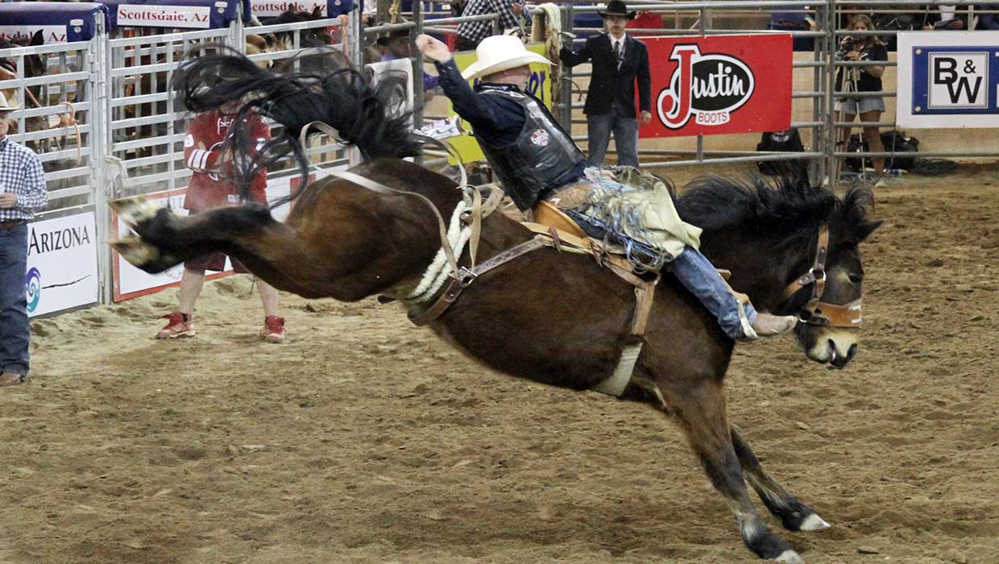

The rodeo will be held on May 11th
Takes place at 11pm
Included in the wristband
Home
Taylor County Fair Pageant
Taylor County Demolition Derby
Taylor County Rides and Games
Team Roping:
Two people, on horse back, work together to rope the steer. The "header" is the first one out, they might rope the steer around the head or horn, the horns are wrapped for this event. The header must give the steer its head start or a ten second penalty will be added. The heeler will rope both back legs. the clock stops when the slack goes out of the rope.
Bareback Riding:
The rider must have their feet above the break of the horse's neck, if their feet are not in the right position when the horse lands the first buck then they are disqualified. The rider must hold on to the rigging, a handhold made of leather and rawhide, for the eight second ride. the rider is judged on their control and on their spurring technique.
Steer-Wrestling:
This is the quickest event in a rodeo. The objective is to wrestle a steer to the ground using nothing but strength and leverage. The steer is given a head start that varies on how big the arena is. The bulldogger, steer wrestler, and the hazer, second cowboy to keep the steer from veering away, come in on specially trained horses after the steer reaches the 'score line.' The steer wrestler slides down the right side of their horse until the they can reach the horns.
Bull Riding:
Unlike the other events bull riders do not require spurs as it's impressive to stay seated for eight seconds. To be a bull rider you would need strong legs and upper body control. It's also a good idea to lean forward as you probably wouldn't want to be whipped forward when the bull bucks. The riders are judged for their good body positions, as well as other factors, like how much effort the bull is putting in, and spurring actions, though not required, add to the riders points.
Tie-Down Roping:
This is an event that people in the Old West did, because they had to get sick or injured calves. Ranch hands took great pride in how fast they could rope and tie down calves, soon it became more competitive. To do tie-down roping you need to be quick and accurate with a lasso, a successful roper, experienced horseman, and a fast sprinter. The roper give the calf it's predetermined head start, then horse and rider chase after it. As the roper throws the rope the horse stops, after catching the calf the rider dismounts, runs to the calf and throws it to the ground by hand, and ties three of it's legs. To accomplish this the horse must keep the slack out of the rope but not tight enough to drag the calf. the roper then throws up his hand to signal that he finished.